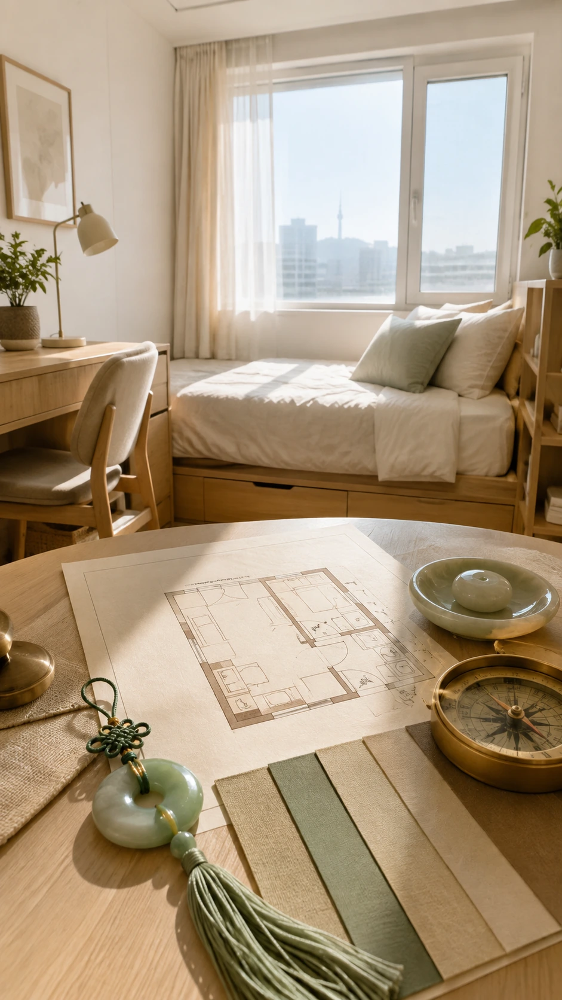
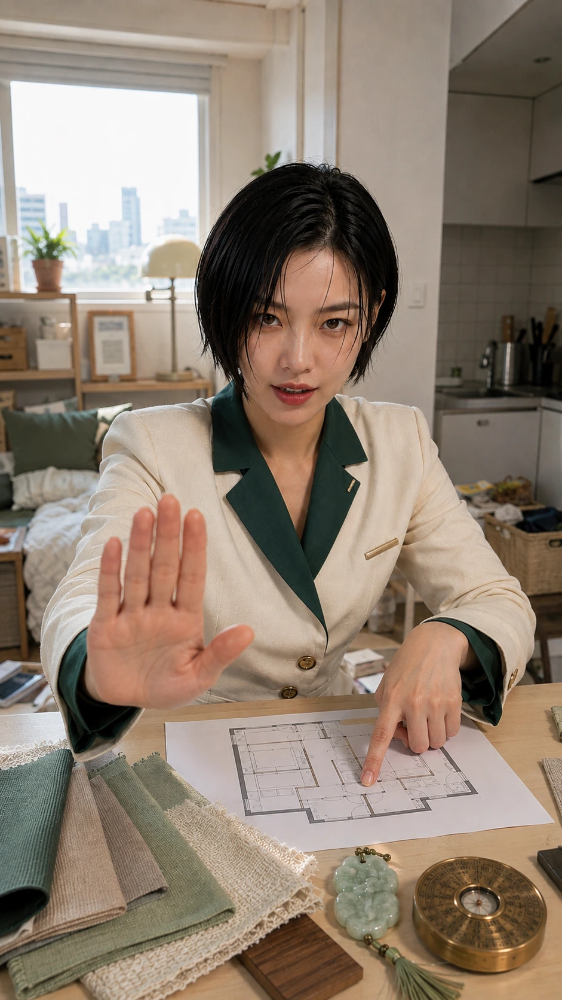
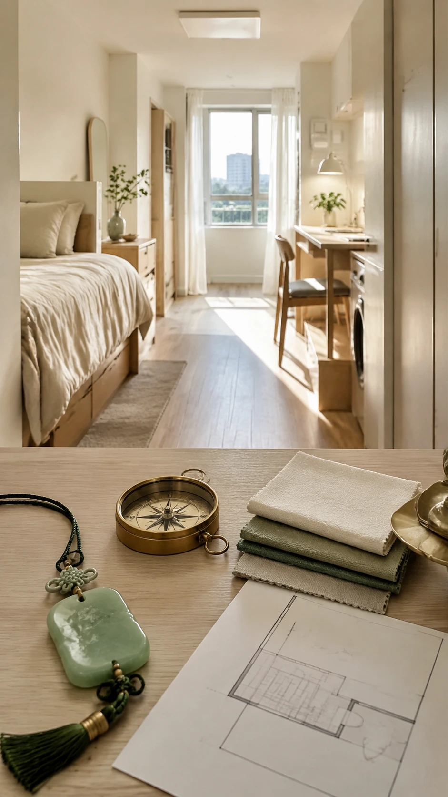
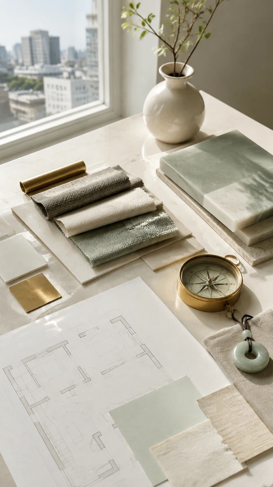
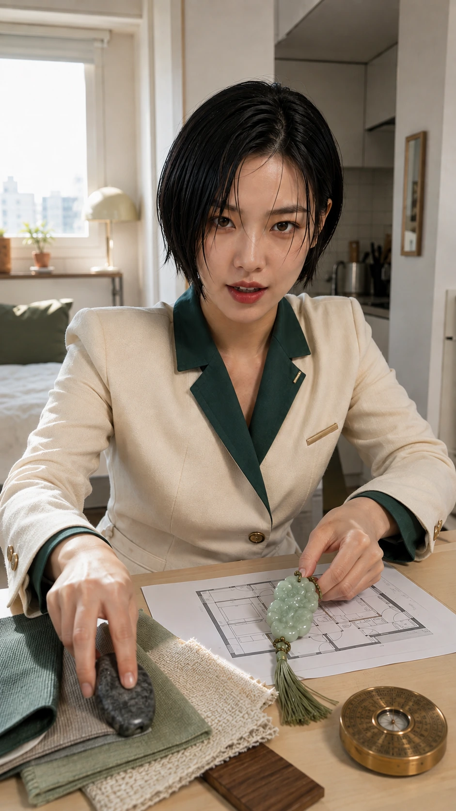
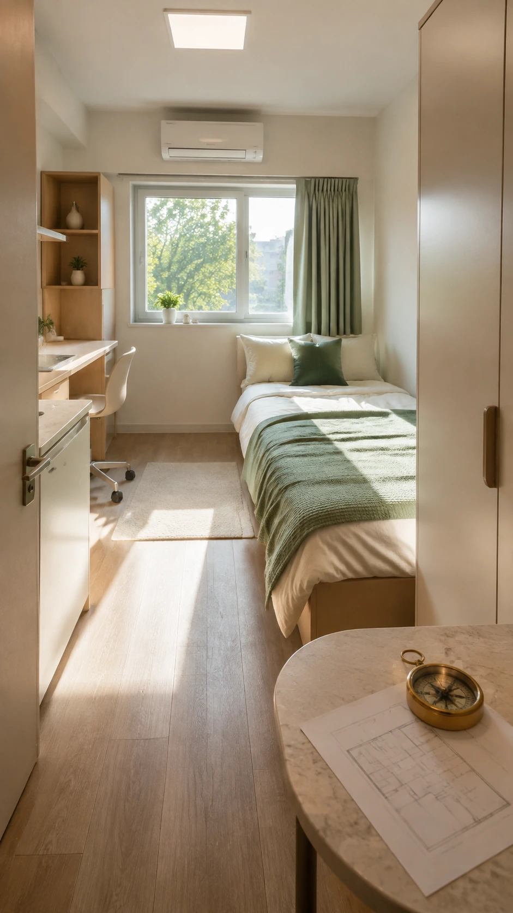
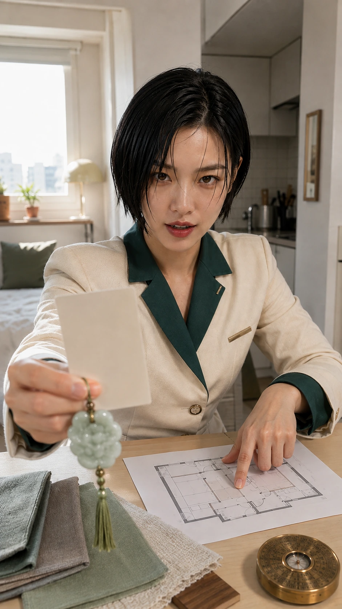
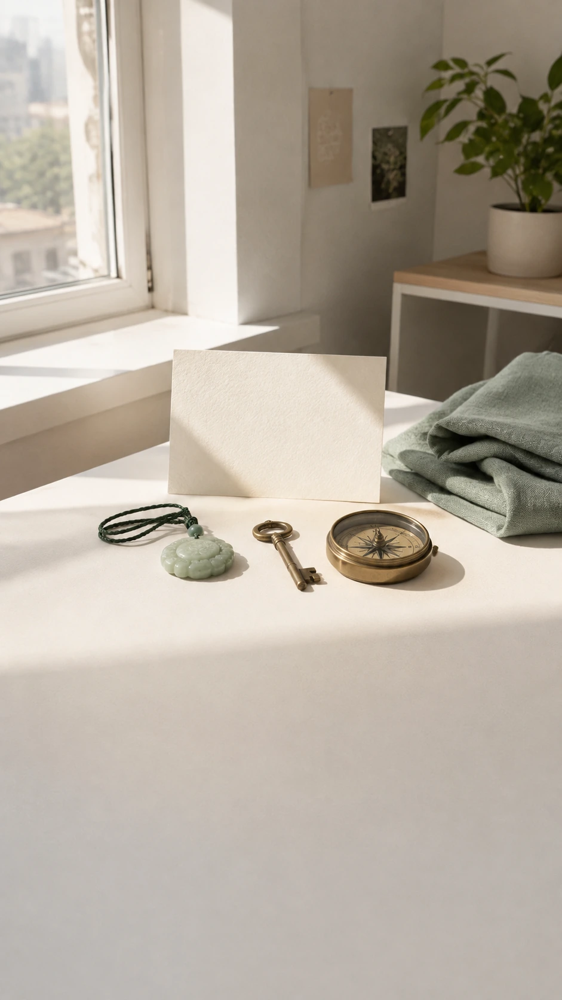

나한테 운 붙는 색과 물건
오늘 입은 옷,
나한테 맞는 색이었을까요.
누구에게나 좋은 색은 없습니다. 나한테 맞는 색이 있을 뿐입니다.

가방 속에 하나쯤은,
나를 도와주는 게 있으면 좋잖아요.
이 리포트는 사주 흐름에서 넘치는 쪽과 모자란 쪽을 보고, 생활에서 가볍게 쓸 색과 소재를 골라줍니다.


채우는 것보다
덜어내는 게 나을 때도 있습니다.
물건은 부적처럼 말하지 않습니다. 재질, 형태, 색이 내 생활감과 어떻게 맞물리는지만 봅니다.


이미 넘치는 걸
계속 더하고 있었을 수도 있어요.
많이 가진 기운은 더 얹기보다 가볍게 덜어낼 때 편해집니다. 불안을 키우지 않고, 선택지만 정리합니다.


이런 것까지 봅니다.
나 무슨 기운이야?넘치는 기운, 모자란 기운, 채워야 할 방향을 먼저 봅니다.
내 색 뭐야?옷, 가방, 방에 쓰기 쉬운 색으로 옮깁니다.
늘 지니면 좋은 건?재질과 형태를 중심으로 가볍게 제안합니다.
어디 앉아야 잘 풀려?책상과 침대, 답답해지는 자리까지 살펴봅니다.


방 안에 하나만 옮겨도
하루가 달라집니다.
오늘 입을 색, 가방에 넣을 소재, 앉을 자리처럼 바로 해볼 수 있는 것부터 열어보세요.

